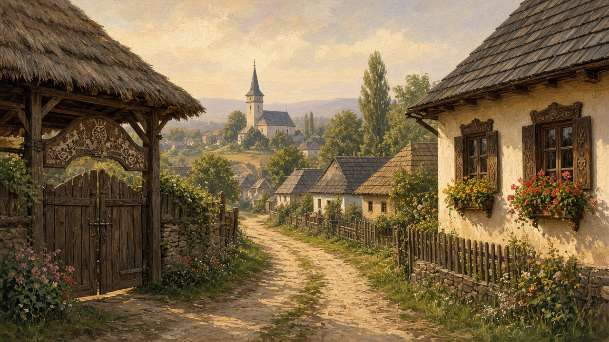

Villages
Sat, and the plural satele. Not a postcard of haystacks. The stretch of road where people still know whose dog that is, and whose son is in Italy this year.

A living unit
A sat is not a row of houses that happen to share a name. It is a road, a few lanes, and what everyone walks past: the gate, the poartă, carved or plain; the church, the biserică, with its cemetery; a troiță at the fork or the village edge; the well or the corner pump; the mill if the creek still turned a wheel; the shop that opens when someone is there. Behind the last house the timber starts — that edge is on the forest. Neighbors know your business because the fence is low and the yard faces work, not privacy. You hear the same dogs, the same tractor, the same radio from a kitchen window. One household is mapped on the house page. This page is the larger claim: those yards belong to each other whether they want to or not.
Not a bloc
A town stair is organized by number and lock. You can live three floors from someone for a decade and still nod without a name. In the village the unit is the road. Children cut through yards. News goes over the fence faster than a phone. There is less anonymity and less convenience: the bus is thin, the clinic is in the next town, and the evening can be very quiet. People who moved to the city often keep both maps — the stairwell where they sleep, and the gate they still say they are from.
When the road fills
Most weekdays the road is dust, a dog, a car that knows every pothole. Then it fills. Sunday morning, toward the church. A name day, onomastică, when a table is set in the yard and cousins appear who were not here yesterday — the loaf on that table is still the one on bread. A funeral, when the procession walks the sat and work stops because everyone is related, or pretends to be for that hour. A wedding still pulls a taraf into a yard — that sound is on the music page — and the hora carries whether you were invited or not. Market day empties the village toward the square. Harvest fills the fields and then the cellar. Winter empties the lane again. The rest of the calendar sits on the year.
Who is away
A lot of gates stay locked from October to December. The school has fewer children than the photographs in the hallway. People work in Italy, Spain, Germany, or a Romanian city that pays on a different clock. They send money. They call on Sunday. They come back for Christmas, Easter, a funeral, the hram when the church keeps its saint and the yard fills with tables. Houses get new roofs and empty rooms. This is not a sermon about the death of the village. It is the ordinary fact: the sat still holds the feasts, and much of the week it holds whoever stayed, the grandparents, and the dogs.
Not one village
Maramureș shows you wood: the tall gate, the shingle church, pasture that looks painted until you notice the mud. Those roofs have their own page — wooden churches. The high pasture belongs with the shepherds. A Transylvanian street may run straight, houses tight to the road, a fortified church at the end. On the Wallachian plain the sat can be long and flat, maize and dust, a metal gate where the carved one used to be. In the Delta the houses sit on water. One word, sat, covers all of that. Ask which valley before you decide you have understood the country.